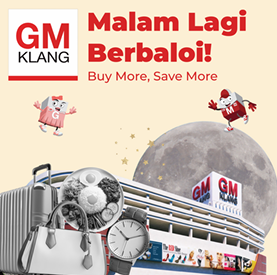
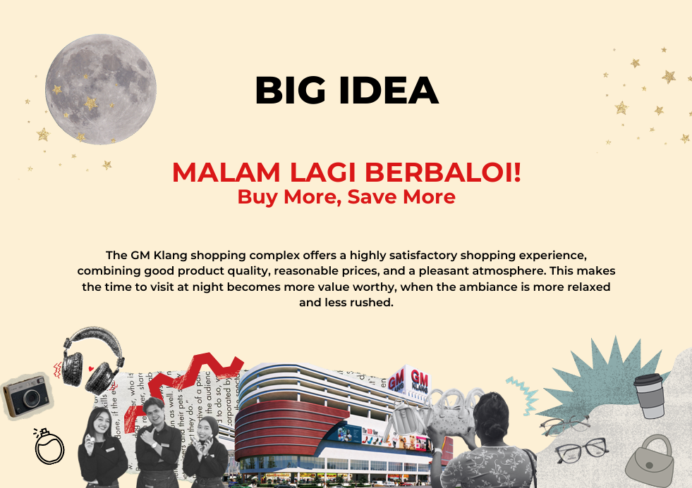

CREATIVE STRATEGY / ADVERTISING CAMPAIGN
GM KLANG
Malam Lagi Berbaloi
Transforming a traditional wholesale destination into a vibrant night-time lifestyle experience through strategic thinking, creative direction, and digital storytelling.
CLIENT
GM Klang
ROLE
Creative Director
TEAM
ReAliss

The Insight
GM Klang wasn't just competing with other shopping destinations. It was competing for people's evenings.
Through consumer research, we discovered an opportunity to reposition GM Klang as a vibrant nighttime destination where shopping becomes an enjoyable experience rather than just a routine errand.
CAMPAIGN OVERVIEW

The campaign repositioned GM Klang as more than a wholesale destination, transforming nighttime shopping into an exciting and rewarding lifestyle experience.
CAMPAIGN DNA
Creative Direction
Audience
Urban and suburban bargain hunters, young professionals, and families looking for value-driven experiences.
Tone
Energetic, humorous, and relatable communication that connects with everyday consumers.
Visual Language
Digital journaling and mixed-media collage aesthetics to create a youthful and engaging identity.
CAMPAIGN EXECUTION
Bringing the Idea to Life
Google Display Network
Digital placements developed using a digital journaling and mixed-media collage aesthetic across lifestyle, news, and business platforms.


YouTube Video Ads
A 30-second video concept using relatable everyday scenarios to highlight GM Klang's extended operating hours and night-time activities.


MY CONTRIBUTION
My Contribution as Creative Director
Creative Direction
Led brainstorming sessions and shaped the campaign vision, tone, and overall creative direction for GM Klang's repositioning strategy.
Strategic Development
Connected audience insights with creative solutions to ensure the campaign idea aligned with consumer behaviour.
Content Execution
Guided the development of video concepts, scripts, and campaign materials across digital platforms.
05 — REFLECTION
What This Project Taught Me
Leading the creative direction for GM Klang strengthened my ability to translate consumer insights into compelling campaign ideas while collaborating across strategy, copywriting, and visual execution. It reinforced the importance of balancing creativity with business objectives to deliver campaigns that are both engaging and purposeful.